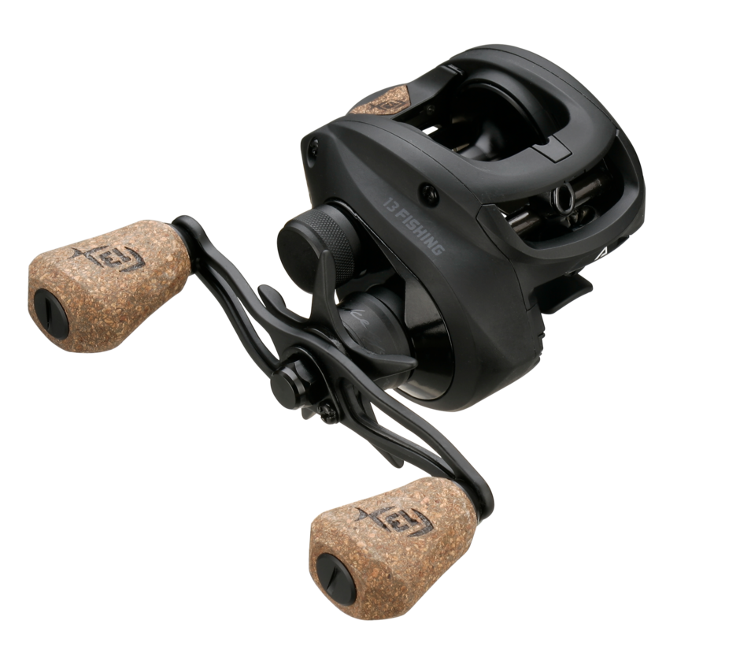

ReelCalc Reel Setup Guide
13 Fishing Concept A2 LH 5.6:1 Line Capacity & Reel Setup Guide
The 13 Fishing Concept A2 LH 5.6:1 is worth considering for lower-geared crankbait and moving-bait bass fishing. This guide follows model A2-5.6-LH, with a published 12 lb / 125 yards mono capacity. The six-way braking adjustment and accessible side plate let anglers tune casting control as lure loads change. The calculator below is already set to this reel, whether you want a full spool of main line or backing under a working section.